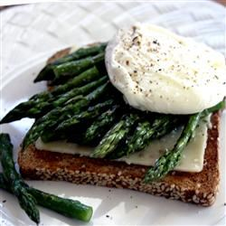

One Pot Pasta

Description
This is a family recipe my mother made for me growing up. My grandfather had several acres of asparagus on his farm, and this was something they served during the spring and fall
whenever asparagus was plentiful. This recipe is also good served with warm breakfast ham or Canadian bacon--just put in on the toast before the egg. Top this masterpiece with
another slice of toast to make a sandwich and eat it on the go.
Ingredients
- 4 eggs
- 1 cube chicken bouillon (Optional)
- 1 pound fresh asparagus, trimmed
- 4 slices whole wheat bread
- 4 slices Cheddar cheese
- 1 tablespoon butter
- Salt and pepper to taste
- Coarse salt and freshly ground pepper
- 4 1/2 cups water
- Freshly grated Parmesan cheese, for serving
Steps
- Fill a saucepan half way full of water. Bring to a boil and stir in the bouillon cube until dissolved. Crack one egg into a measuring cup or large spoon and gently slip it into the boiling water. Repeat with remaining eggs. Simmer for about 5 minutes over medium heat. Remove with a slotted spoon and keep warm.
- Meanwhile, Place the asparagus into a saucepan and fill with enough water to cover. Bring to a boil, and cook until asparagus is tender, about 4 minutes. Drain.
- Toast the bread to your desired darkness. Spread butter onto each piece of toast. Top with a slice of cheese, then a poached egg and finally, asparagus. Season with salt and pepper and serve immediately.
Return to main page